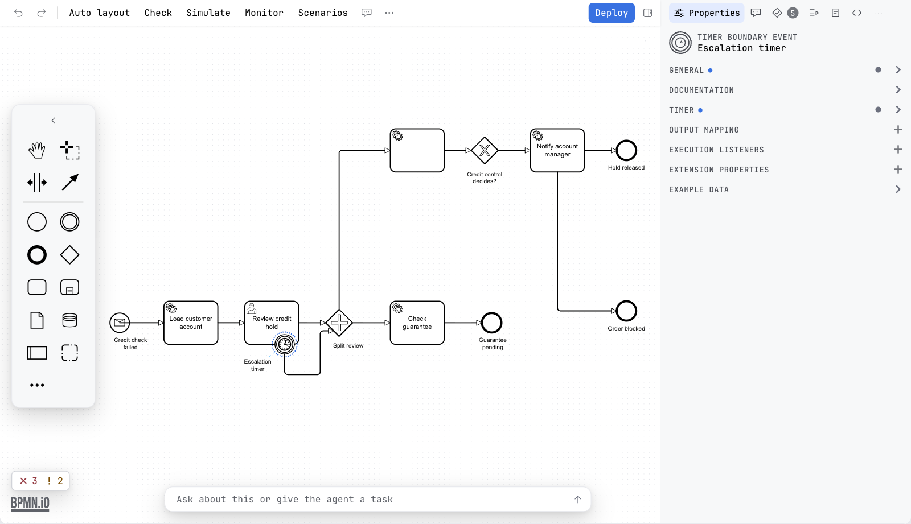

Guide / Editors
BPMN elements
Every element you can draw, what it is for, and how to find it.
Add an element
- Look at the palette, the floating island beside the canvas. It has the elements most diagrams need.
- Drag one onto the canvas. Or click it, then click on the canvas.
- For any other element, press Create element at the foot of the palette. Type to search, or open a group.
The same catalogue opens from the pad of an element you have selected. There it appends the element you choose to the selected one, already connected.
The palette
It is a floating island rather than a strip of the window: sixteen pixels in from the left edge of the canvas, vertically centred, rounded, and never more than three quarters of the height of the canvas, so a palette with more entries than that scrolls inside the island. The canvas is inset so nothing sits under it. See Editing a diagram.
| Item | What it is for |
|---|---|
| Hand tool | Moves the canvas without selecting anything. |
| Lasso tool | Selects everything inside a rectangle. |
| Space tool | Adds or removes empty space. Everything past the line you drag moves. |
| Global connect tool | Draws a connection that starts from any element. |
| Start event | Where a process or a path begins. |
| Intermediate / boundary event | Something the process waits for or sends partway. Dropped on the border of a task, it becomes a boundary event. |
| End event | Where a path ends. |
| Gateway | A split or a join of the path. |
| Task | A step of work. |
| Expanded sub-process | A process drawn inside another. |
| Data object reference | Data that lives as long as the process instance. |
| Data store reference | Data that outlives the instance. |
| Pool / participant | An organisation or system taking part. |
| Group | A visual box around elements. It has no meaning when the process runs. |
| Create element | Opens the catalogue. |
The catalogue
Tasks
| Task | An unspecified step. Often a placeholder. |
| User task | Work a person has to do. |
| Service task | Automated work done by a job worker or a connector. |
| Business rule task | Evaluates a business rule, usually a DMN decision. |
| Script task | Runs a script. On Camunda 7 the script can open as an editor tab. See Scripts in their own tab. |
Gateways
| Exclusive gateway | Sends the token down one path, chosen by data. |
| Parallel gateway | Splits into parallel paths, or joins them. |
| Event-based gateway | Follows the path of whichever event happens first. |
Sub-processes
| Call activity | Calls another process, like a function call. |
| Transaction | A sub-process that completes as a whole, or is compensated. |
| Event sub-process | A sub-process started by an event in its scope. |
| Sub-process, collapsed | Shown as one box. Double-click to open it in its own view. |
| Sub-process, expanded | Drawn inline, with its contents. |
| Ad-hoc sub-process | Activities run in any order, any number of times. Collapsed or expanded. |
Events
Events are grouped by where they sit in the flow, because the same trigger means different things in each place.
| Start events | Where a process or path begins. |
| Intermediate catch events | Wait for something to happen, then continue. |
| Intermediate throw events | Send something, then continue. |
| Boundary events | React to something while a task runs. An interrupting one cancels the task. A non-interrupting one leaves it running. |
| End events | Where a path ends. |
Inside each group are the triggers BPMN defines: message, timer, error, escalation, signal, compensation, conditional, link and terminate. Only the ones that are allowed in that place are offered.

Data and participants
Data object reference and data store reference are drawn as in the palette. A pool stands for an organisation or a system. Two pools in one diagram make a collaboration. Only a message flow may cross between pools. Lanes divide a pool by role or department. They carry no meaning when the process runs.
Collapse and expand an event sub-process
Select an event sub-process and open the change-element menu (the wrench). It offers to collapse the sub-process into one box, and to expand it again. bpmn-js offers this only for ordinary sub-processes. Penstock adds it for event sub-processes, in every diagram type.
Colours and the grid
The context pad carries a colour picker, and the canvas carries a grid that elements snap to. Both are free, and both are in the Classic BPMN profile as well as in the Camunda ones.
Change an element into another
Select it and press the wrench on its pad. The menu offers what the element can legally become. The name, connections and properties that still apply are kept.
What changes with the engine
The palette and the catalogue are the same for every engine. What changes is what the properties panel offers and which namespace is written into the file. See Engines.
What you see
- The element appears on the canvas.
- The properties panel shows the settings of that element.
Common problems
- I cannot find an element in the palette.
- Use Create element. It has every element.
- My boundary event will not attach.
- Drop it on the border of a task or sub-process, not inside.
- I need a Camunda-specific task, for example a connector.
- Use an element template on a service task.